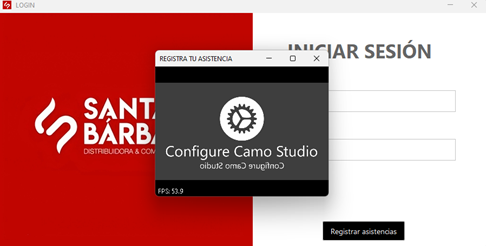
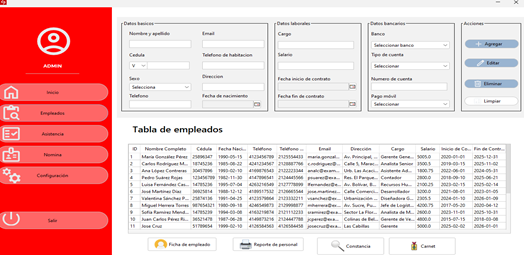
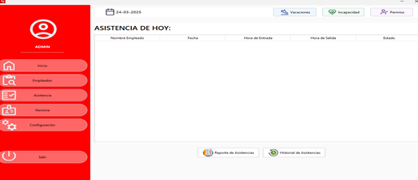
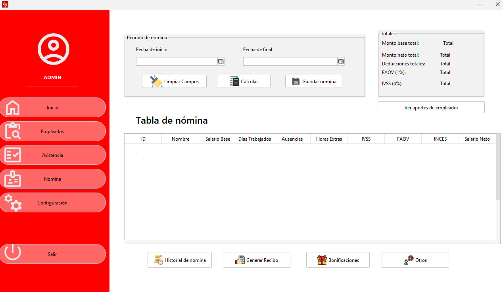
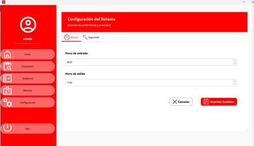

Bienvenido al manual de usuario del sistema SantaBarbara, una herramienta integral para la gestión de empleados, asistencia y nómina. Este documento interactivo te guiará por cada módulo de la aplicación, destacando sus funciones y cómo sacarles el máximo provecho.
El sistema SantaBarbara centraliza la administración de la información de los empleados, incluyendo datos personales, laborales y bancarios. Permite gestionar asistencias, calcular nómina, generar recibos y reportes, además de controlar ausencias, permisos y bonificaciones. Incluye opciones para configurar horarios predeterminados y aspectos de seguridad, todo en una interfaz intuitiva para una navegación fluida y eficaz.
La pantalla de inicio solicita usuario y contraseña. Incluye un botón adicional para Registrar Asistencias mediante código QR, facilitando el control de entrada y salida del personal usando los carnets asignados.

A través de la cámara del equipo, el sistema permite registrar asistencias usando códigos QR únicos generados para cada empleado, garantizando control y seguridad.

Administra datos personales, laborales y bancarios de cada empleado. Desde esta ventana puedes agregar, editar, eliminar y consultar información. Además, permite generar reportes, constancias y carnets.

Muestra la asistencia diaria con tabla detallada por nombre, fecha, entrada, salida y estado (Presente, Tarde, Ausente). También permite gestionar vacaciones, permisos e incapacidades.

Permite calcular salarios base y netos, registrar deducciones legales (FAOV, IVSS, INCES) y visualizar datos como días trabajados, horas extra, bonificaciones y descuentos. Además, se pueden generar recibos y consultar historiales de pagos.

Define horarios de entrada y salida predeterminados para los empleados. También se puede acceder a la pestaña de seguridad para gestionar contraseñas y permisos administrativos.